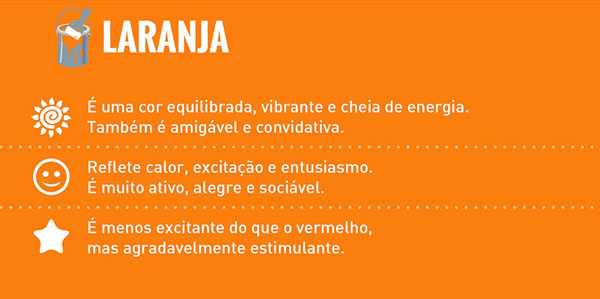
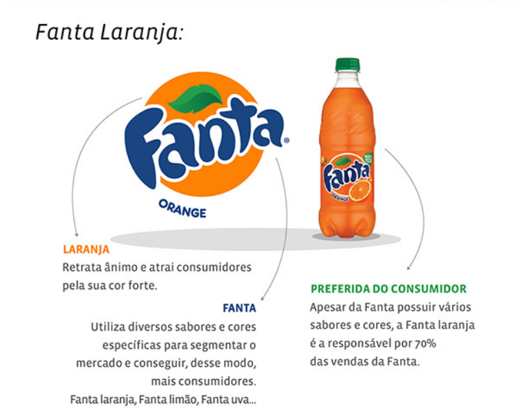

Grupo: Breno Chaves, Pedro Demartini, Antony Alex, Silvio
1: O que é psicologia das cores?
A psicologia é a ciência que estuda o comportamento humano,
os processos mentais (como pensamento, emoção e aprendizado) e a subjetividade.
Ela investiga o que motiva as ações, os sentimentos
e como as pessoas interagem consigo mesmas e com o ambiente.
Fonte:

2: Por que as empresas investem no uso de estratégia das cores?
As empresas investem na estratégia das cores porque elas são ferramentas poderosas
de comunicação não verbal que influenciam diretamente as emoções, comportamentos e decisões de compra dos consumidores.
Mais do que estética, o uso estratégico das cores — baseado na psicologia das cores
ajuda a construir a identidade da marca, diferenciar-se da concorrência e aumentar o reconhecimento da marca em até 80%

3: O que é a cor do ano?(pantone)
A Cor do Ano Pantone é uma seleção anual realizada pelo Pantone Color Institute desde 2000
que define uma tonalidade para representar tendências culturais, sociais e
emocionais globais. Ela funciona como uma previsão de comportamento, influenciando
áreas como moda, design, decoração e marketing.
4: Escolha uma propaganda e analise:
Qual sensação ou sentimento transmite
A propaganda transmite a sensação de felicidade e positividade. A frase
"Abra a felicidade" faz um trocadilho com o ato de abrir a garrafa,
associando o produto a momentos felizes. Além disso, a cor vermelha chama
atenção e passa energia, fazendo com que o produto pareça mais atrativo
para o consumidor.

5: Como influenciam o consumo?
Shopify Brasil:
As cores influenciam emoções e decisões de compra dos consumidores.
Elas podem despertar diferentes sentimentos e percepções, fazendo com que as pessoas
se sintam mais atraídas por determinados produtos ou marcas.
Fonte:https://www.shopify.com/br/blog/teoria-das-cores
Adobe Express:
Empresas usam cores para transmitir sensações como confiança, urgência e luxo.
Essas sensações ajudam a influenciar a forma como o consumidor enxerga o produto
e podem aumentar o interesse pela compra.
Fonte:https://www.adobe.com/br/express/learn/blog/psicologia-cores-escolhas
Meio & Mensagem
A escolha das cores pode aumentar atenção, reconhecimento da marca e vendas.
Isso acontece porque cores bem escolhidas chamam mais a atenção do público
e fazem o produto ficar mais marcante na mente do consumidor.
Fonte:https://www.meioemensagem.com.br/marketing/psicologia-das-cores

Por Que Escolhemos Essa Cor?
Nós escolhemos a cor laranja pois de acordo com esta fonte "Safol Gôndolas" nós podemos entender que a cor laranja mostra otimismo
emoção e entusiasmo trazendo também originalidade vista nas marcas e liberdade na forma de pensar.


